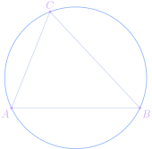

bold, italic, underline, strikethrough,
H2O, E = mc2, and coloredbold green text.
Links open in a new tab
or the same tab.
Sidenotes sit in the margin.
Like this one, numbered automatically.
Heading levels
Level four
Level five
Level six
Math & code
Inline math $e^{i\pi} + 1 = 0$ and display math:
$$\sum_{k=1}^{n} k = \frac{n(n+1)}{2}$$
Inline code like collatz(27) sits in the text, and code blocks are highlighted:
def collatz(n):
steps = 0
while n != 1:
n = n // 2 if n % 2 == 0 else 3 * n + 1
steps += 1
return steps
bloops -pc -i showcase
Lists
Default bullets
Nested squares:
one
two
Numbered
Ordered
Lettered
Ordered
Roman
Numerals
Figures & quotes
Rendered from an img tag

Compiled from an asy block
A mathematician is a device for turning coffee into theorems.
Paul Erdős
Math boxes
Theorem (Pythagoras).
In a right triangle, $a^2 + b^2 = c^2$.
Proof.
Rearrange four copies of the triangle inside a square of side $a + b$.□
Lemma.
Every tree with $n$ vertices has $n - 1$ edges.
Proposition.
$\sqrt{2}$ is irrational.
Corollary (of the lemma).
A forest with $c$ components has $n - c$ edges.
Example.
$3, 10, 5, 16, 8, 4, 2, 1$ is a Collatz sequence.
Claim (key) —
The sum of two odd numbers is even.
Exercise.
Show that $n^3 - n$ is divisible by $6$.
Problem (AMC-style).
Find the remainder when $2^{10}$ is divided by $7$.
Click to reveal the solution
Solution.
Since $2^3 \equiv 1 \pmod 7$, we get $2^{10} = (2^3)^3 \cdot 2 \equiv 2$.■